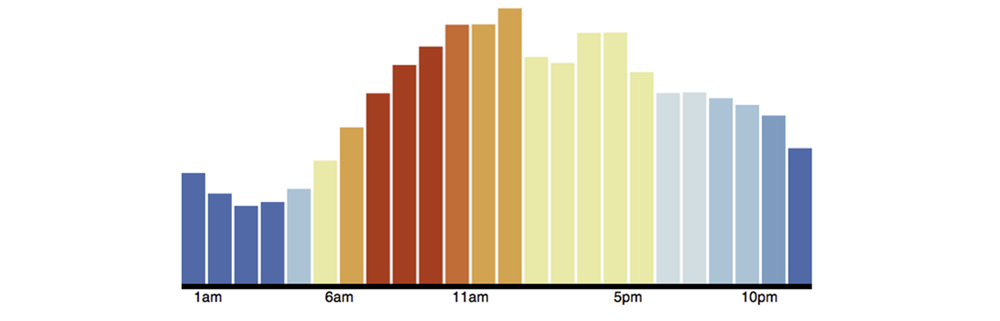

Creating custom reduces
In the majority of cases most developers will use built-in reduce functions provided by Couchbase Server to perform calculations on index items. Even more complex operations can be performed using a combination of logic in a map function combined with built-in reduce functions. The advantage of using built-in reduces with map functions is that your view functions will tend to be less complex, and will tend to be less error-prone. There are however some cases where you will need to build a custom reduce function either alone, or in conjunction with a built-in reduce. This section demonstrates the use of custom reduce functions.
For more information about the sample application described in this section, as well as the custom reduce function used in it, see Creating a Couchbase view from Reddit.
The goal of our application is to show the frequency of Reddit posts that occur over the course of a day. To do this we aggregate information from Reddit, the online source for user-nominated and user-voted links. In this sample we already have information from a Reddit page as JSON documents stored in Couchbase Server. Here is the output we would like to present as graph:
In this graph we have a x-axis to represent the 24 hours in a day. Each bar that appears in the graph represents the number of Reddit posts that occurred in a one-hour time block during the day, such as the time between 6:00AM to 7:00AM. To start, we extract information from the page and create JSON documents to represent each Reddit post. An example document would look like this:
{
....
"kind": "link",
....
"title": "I don't buy the bottled Thai Sweet Chili Sauce anymore...",
"thumbnail": "",
"permalink": "/r/food/comments/yph1p/i_dont_buy_the_bottled_thai_sweet_chili_sauce/",
"url": "http://www.ibelieveicanfry.com/2012/08/thai-sweet-chili-sauce.html",
"created": 1345745189,
"num_reports": null,
"saved": false,
"subreddit": "food",
"ups": 10,
"created_utc": 134759064,
....
}
For the sake of brevity we do not show some of the document attributes which we do not use in our application. When we extract JSON from Reddit, we add an attribute kind with the value of “link” to indicate this is a Reddit link. The attributes we want to extract with a map function and output as a compound key are [subreddit, day-of-week, date].
The logic used to index items in Couchbase Server require that compound keys be sorted first by the first element, and then by the second element, and so on. This means that items in an index from the same subreddit will be grouped, and within that group, items are sorted by day-of-week and so on. For more information about compound keys and sorting, see Using compound keys and group-by functions.
Creating compound keys sorts the keys so that we can specify what range we want to retrieve from the index using query parameters. When we query the view for this data we can use the query parameters startkey and endkey to get the items in a particular subreddit post, in all the subreddits between days of the week, or in all subreddits on a day based on the time of day. The following is the map function we use to generate a compound key and provide the post time, date, and score:
function (doc, meta) {
if (meta.type == "json" && doc.kind && doc.created_utc) {
if(doc.kind == "link") {
var dt = new Date(doc.created_utc * 1000);
var hrs = dt.getUTCHours();
var out = {total: 1, freqs: [], score: []};
//Get day of week, but start week on Saturday, not Sunday, so that
//we can pull out the weekend easily.
var ssday = dt.getUTCDay() + 1;
if (ssday == 7) ssday = 0;
out.freqs[hrs] = 1;
out.score[hrs] = doc.score;
emit([doc.subreddit, ssday, dt], out);
}
}
}
As a best practice we want make sure that the fields we want to include in our index actually exist. Therefore we have our map function within a conditional which determines the document is JSON and also checks that the fields doc.kind and doc.created_utc actually exist. This ensures the fields exist in documents when we query the view and we therefore avoid a view failure when Couchbase Server generates the index.
The first thing we do is determine if the document is JSON and whether it is a Reddit link. Then we create instance variables dt to store the date of the post as a UTC value multiplied by 1000. We then have a variable hrs to store the hour of the post. We will use these two variables for the second and third elements of our compound key. The variable out will be a hash value that we emit for each compound key. It will contain the total instances of the post that occur, the frequency of the post, and the score for the post. The final variable we set up, ssday converts the UTC to the day of the week plus one and if it is the last day of the week, we set it to 0. So following our logic, Saturday would be set to 0, Sunday will be 1, and Thursday would be 5.
Then we generate the value for our index. We set position hrs of the array to 1, for instance, if the post time stamp is the 2:00 in the morning, we have the array [null, null, 1]. Finally we emit the value in our index with the compound key and the out hash as our value.
A sample index entry based on this map function will appear as follows:
Key
["food", 5, "2012-09-14T02:44:07.230Z"]
Value
{total:1, freqs: [null, null, 1], score: [null, null, 5]}
The map function outputs the hour of the day by storing 1 in freqs at the position representing the hour of day. In the score array we output the score at the position representing the hour of day. In this case we have a post that occurred at 2:00AM so the score of 5 is at position 2 of the array. To aggregate the frequency of posts into each 24-hour time periods in a day, we use this custom reduce function:
function (keys, values, rereduce) {
var out = {};
out.freqs = [];
out.score = [];
for(i = 0; i < 24; i++) {
out.freqs[i] = 0;
out.score[i] = 0;
}
out.total = 0;
for(v in values) {
for(h in values[v].freqs) {
out.freqs[h] += values[v].freqs[h];
out.score[h] += values[v].score[h];
}
out.total += values[v].total;
}
return out;
}
The reduce function will aggregate the output of the map and can later be queried to get a range of keys within the result set. We create arrays to store our aggregated frequency and aggregated scores, and then create array elements for the 24 hours in a day. We then sum the frequency and sum the scores in each array element and store it in the array position for the hour of the day. When we query the view, the result of the reduce function will appear as follows:
{"rows":[{"key":null,
"value":{"freqs":[20753,19760,15821,15284,14627,13699,11012,8991,
7330,6327,6637,7711,10003,12705,15464, 17765,
19265,21043,21068,22372,18423,17951,20382,20404],
"score":[640304,620266,543505,507882,444247,362853,307157,
269177,249111,299142,336299,484781,701107,885255,
1006005,1095631,1020605,982352,849484,864482,
727186,689255,666884,692730],
"total":364797}}]}
So for the first hour of the day, which is midnight to 1:00 AM we have 20753 posts on Reddit with the aggregate score of 640304. Both the freqs and score attributes have arrays with 24 values. The values in freqs are the total number of Reddits posts that occured in 1 hour time blocks, and the values in scores are the aggregate scores for posts that occured in 1 hour time blocks over a day. The final item in the reduce is total, which is the total number of Reddit posts that occurred in an entire day. We use the array values in freqs from our custom reduce to generate our frequency graph. Each frequency can be plotted to the corresponding hour in a day and color-coded:
To create a graph from the JSON result set, we use open source data visualization code available from Data-Driven Documents. The graph is created using HTML and JQuery.